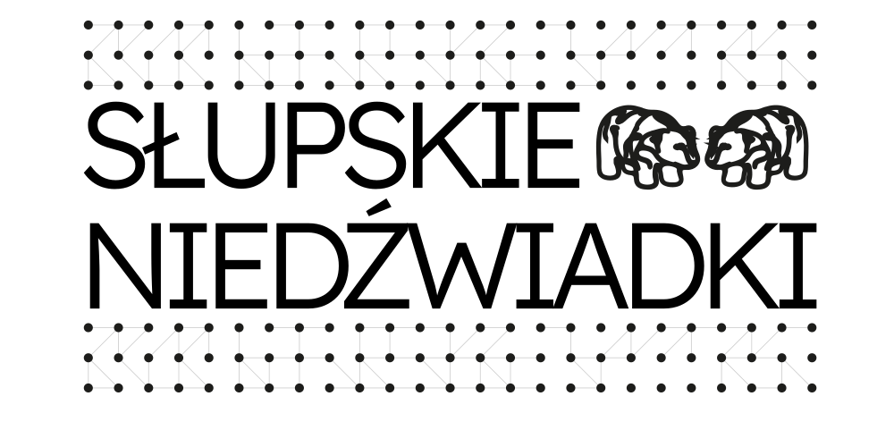
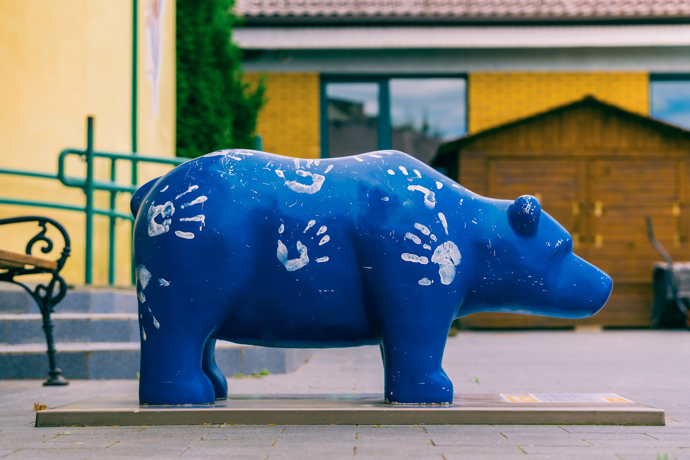
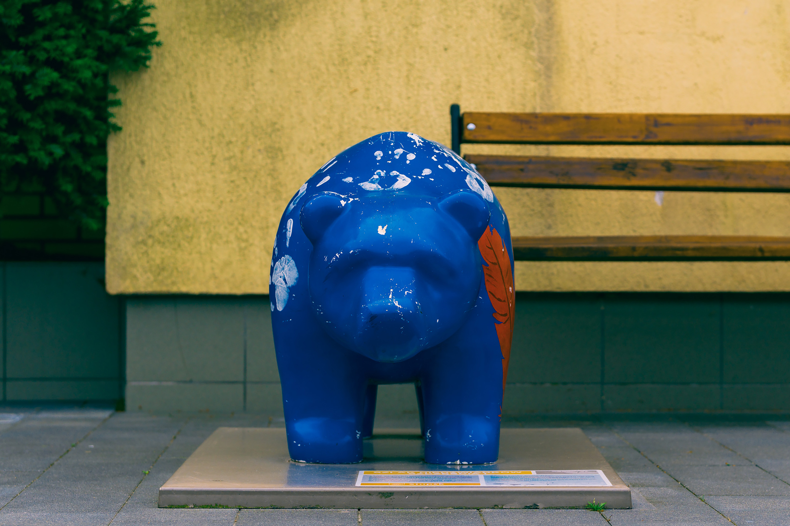
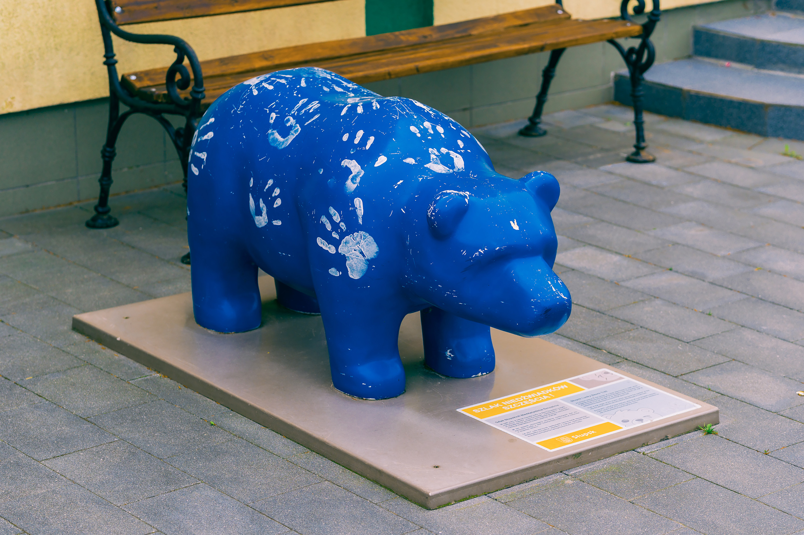
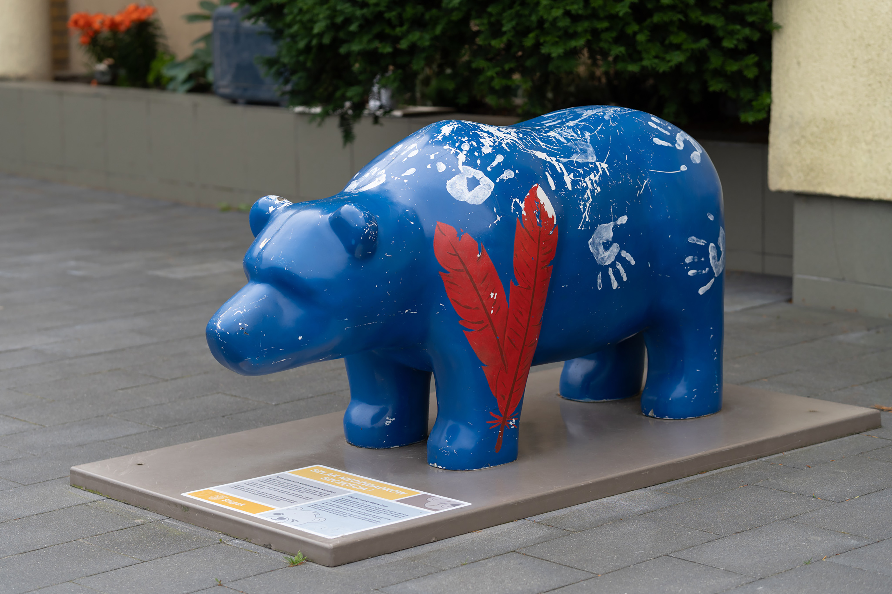
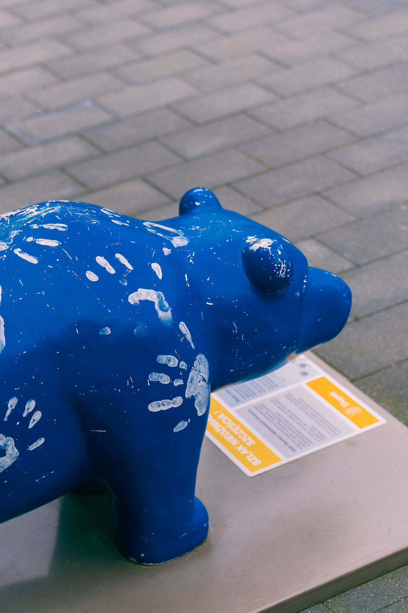

Niedźwiadek Gryfitów
Niedźwiadek został odsłonięty 3 czerwca 2019 z okazji jubileuszu 20-lecia powstania szkoły.


Niedźwiadek został odsłonięty 3 czerwca 2019 z okazji jubileuszu 20-lecia powstania szkoły.



